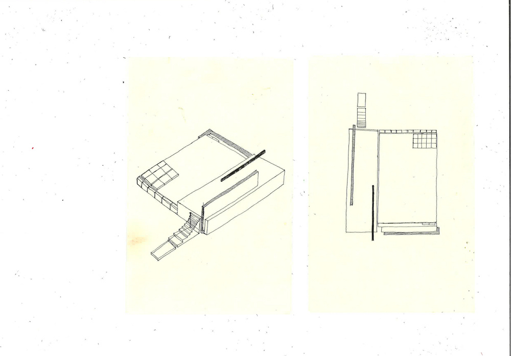
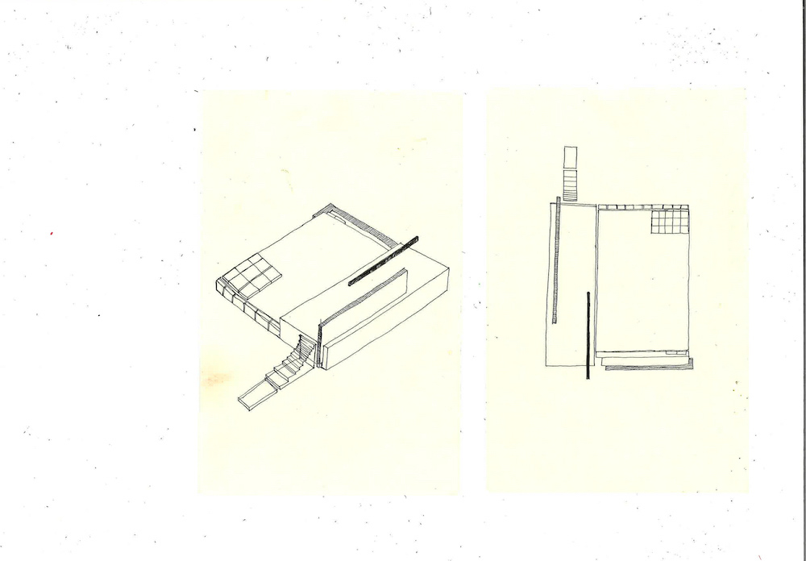
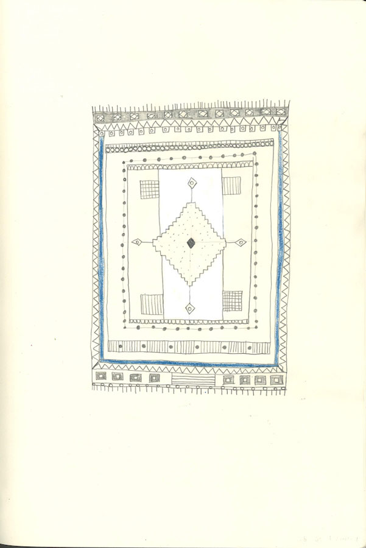
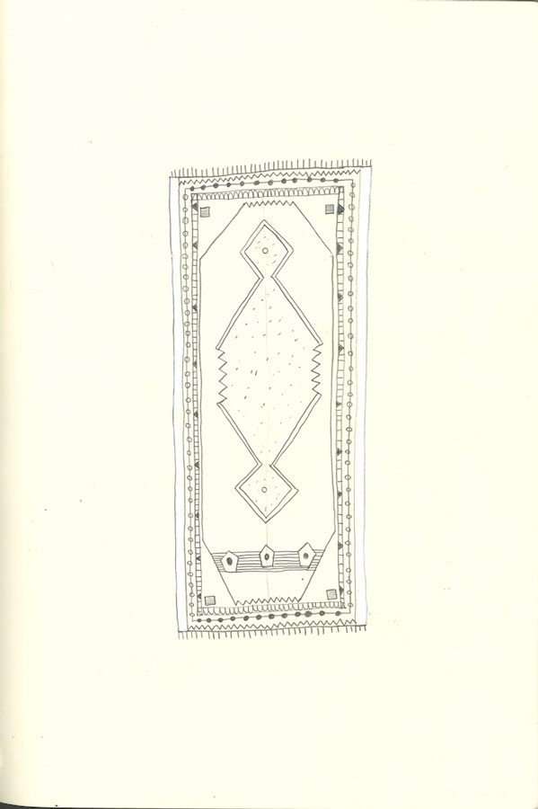
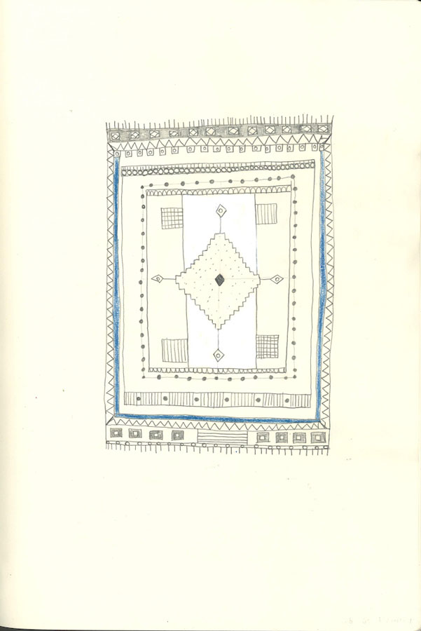
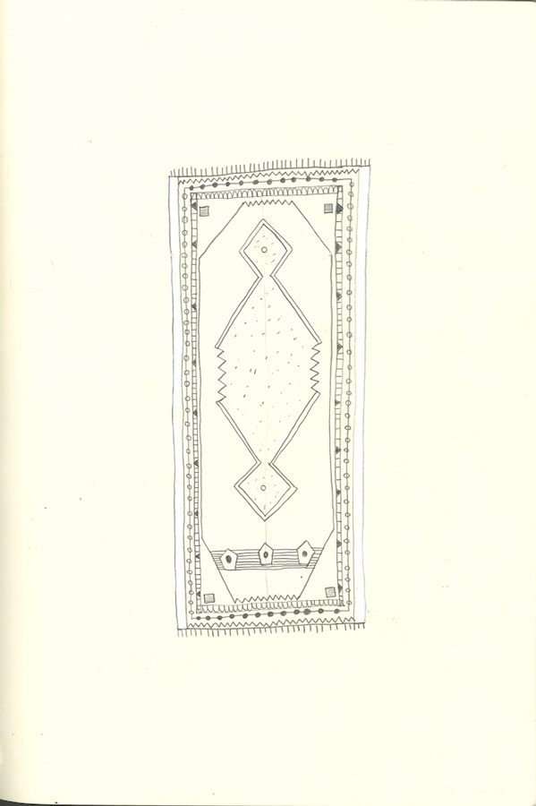

I am a Belgian architect/creator with Iranian roots who is based in Ghent. Through my profession I convert my personal chaos into structural order. In this way I try to find intrinsic serenity and I always use my intuition as a starting point.
I try to transform my state of mind into a place that is transcended by materiality and thus forms an open narrative. I draw from daily compositions, texts, visual arts, and above all from dialogues with the other.

 



Dear Shervin,
I feel that when architecture turns towards the investigation of personal experiences - their influence on perception of the self and the outside world - the form can become as if a mold turning one’s state of mind into a place, transcending materiality while becoming an open narrative. It’s something other than an architecture of ideology or principle; shifting towards the dialogue of possibilities rather than hoping for ready solutions. Embracing fluidity, as if the only thing sure- in praise of no definite answers. Movement and reinvention- a mode seemingly closest to nature.
Creating from emotions and impressions explores the modes of poetry within architecture. Placing the architect within the work not only as a maker but an artist reflecting upon personal stories, placing them into a shared context where they become public.
It’s an open-ended approach, one of no answers but an open conversation of the form with each participant, in opposition to whether the commercial or the functional. A world within a world. A heterotopie. Holding the belief that it is our inner being that holds the genuine experience of the world.
Shaping and exposing the reality built from a subjective perspective is in fact the purest cultivation of culture, opposing to the monoculture of ready ideas. And what emerges when the mind that wishes to create a space, is one hang up in-between cultures? What if the form is to give a space for two seemingly distant worlds to merge in a dialogue? And what if one passes the dialogue on to the building itself? In your project you seem to merge the co- and counter-existing poles of your identity- the Iranian and the Western, wishing to materialize both cultures within an open form as they live within your inner and outer landscape; traveling with you between the countries, the scattered members of family, the thoughts, the rituals. With such generosity of experience, you seem to create a fluidity of life narratives outside of political appropriation and the forced choice of singular identity proposed by the hegemony of nation-driven choices. The recent trip you took to Iran, both a challenging confrontation and a sentimental dialogue, somehow proved the confusion taken from the expectations of being culturally consistent. The story of being both shattered and familiar is known to many, with the basic description of “feeling Eastern when in West, feeling Western when in East”. Seems that such reflection made you pose a question whether your identity meets gaps and lacks due to not being either Western or Eastern fully, or perhaps transcends these by creating a third one of your own, far from the simplified perception East or West, as you know both from the genuine world of family, home street, secret; trying to resolve cliches, or merge different morals.
I imagine that during the trip you took to Iran last winter, these reflections were spinning around cities and landscapes, landing on whether stones or palaces, in search for nothing more than a feeling of familiarity, movement, or a mirror to what you carried inside. All so that your being could become its own maker of opinions, starting with the human, not politics or mass belief. A different approach to the cultural heritage, one similar to looking at a stone-investigating from each angle, seeking what one connects to… And there it emerges.
When one opens the eyes beyond the known patterns, the elements of the two cultures start to play with each other, as if a brother and sister losing the grip of which arm is whose. All starts to become less clear, or less necessary to find out, as if a game of possibilities.
This is true even to the politicized yet endlessly multi-angled element of our lives such as censorship, which spinned around seemed to spin around your head during this year and throughout the trip especially. The Iranian policy of moral state control vs the Western sell-out to the capitalist ideas which enter each fragment of life- even this division seems as a simplification and deserves an ongoing reflection. And when it all comes to place, it becomes clear that there’s not one answer. And that a word cannot always grasp that complexity. Or, through its means, makes the dialogue more complicated and estranged. When sharing with me the stories of the two cultures, Iran seems to keep within people the cultivation of some secret- the treasuring of life within the walls of the house and family,motivated by the culture and too through country’s isolation or limits imposed by the regime.
On the other hand, the West gifts an open conversation, room for initiative and spontaneity, as much as gives us into the hands of consumerism, even within the house, within a feeling. And then, in a dialogue which seems to need a metaphoric form, something more universal than words,
there comes the intriguing beauty and familiarity of both- the western functional architecture and the presence of sacredness within the Persian palace. The beauty of both.
The wish for fluidity. For an open space. For a passionate puzzle- the richest of relationships_ not wishing to resolve some quest, but to share with one another, things real, as ours. From that wish, not one definite work is born, but many, as if a coexistence of elements, all as genuine. Just as there is no one true poem in one’s mind but many, you create forms in praise against finalizing, but in praise of renewing, as the most organic trait of the world- durational, ever-adjusting, participatory.
Within your project, you decided to design a few palaces that materialize the in-between state of cultures. Round arches meet the square cubes, ornaments come together with structural puzzle-pieces, and you design the forms so they can enter each other as one organism. I travel within, experiencing transcendence beyond time, place and culture. The transparency of the buildings invites into the dialogue the surroundings, as if an anti - tyranny, allowing the works to change themselves together with the surroundings, becoming a reflection, a mirror, a true Present- emitting the elements of Now as the ever necessary time for re-interpretation. Now as a result of the actions and cycles, and the open potential for future. As a necessary link to that, the water is present in each of the buildings’ central space. As a source of life, as a connection of each culture and being, as a ritualistic purification. To me, these palaces become as if a space for either solo or collective meditation or reflection. They are a metaphor for the pledge for honesty, the transparence of power, the humbleness. They give room to coming back to both ourselves and our surroundings, as a base of culture. The lack of divided rooms. The praise of no and all-functionality.
The abolishment of censorship in favor of honesty; and being able to see things as they are.The purity. The light. The dialogue open with the world. I enter with you the complex of mirrored landscapes of mind and materiality.
I experience architecture unfolded into a space of life’s cycles and rituals, outside of the linear time yet with a space for reinvention for each visitor. It’s a world that allows a Hegelian belief of history as a deductive process, abandoning unmovable blocks and ready-answers, instead seeking back the relationship to the futures and the pasts as our contexts deriving from various places yet from one consciousness. A human within a moving Universe, all in a quiet need of lucidity. With Love, Weronika, spring 2018
شروین عزیز،
من احساس می کنم زمانیکه معماری با تجربیات شخصی یک فرد تلفیق می شود– با تأثیری که بر روی ادراک شخص و جهان مادی می گذارند- فرم و ظاهر شکل ها، می توانند حالت و ایده ذهن را در قالب مکان و فضا بیان کنند. در واقع، ایده ها و افکار ذهن، فراتر از مادی بودن، تبدیل به مکانی می شوند که روایت کننده وقایع هستند؛ که این چیزی جز معماری ایدئولوژی نیست؛ در واقع، تغییر به سمت عملی کردن افکار، و نه تنها امید به راه حل های آماده و غیر قابل اجرا، و پذیرش آزادی بیان، به عنوان تنها چیزی که می توان به آن اعتماد کرد- به جای ستایش پاسخ های غیر قطعی و غیر واقعی- است. به طور کلی می توان بیان کرد که حرکتی رو به جلو و نوآورانه است؛ حرکتی شبیه به طبیعت و هستی. خلق اثر، با تلفیقی از احساسات و خاطرات، عاملی برای ایجاد نظم و یکپارچگی در معماری می شود؛ این امر زمانی اتفاق می افتد که معمار نه تنها به عنوان یک سازنده، بلکه به عنوان یک هنرمند، که بیان کننده داستان های شخصی است، شروع به کار می کند و عاملی می شود برای قرار دادن آثار مختلف با زمینه های مشترک در کنار یکدیگر و خلق آثاری ملی و همگانی. این رویکردی است که پایان و انتهایی ندارد؛ یکی از کارهایی که هیچ پاسخ صریحی برایش نیست و عاملی است برای ایجاد یک مکالمه صریح و واضح بین اشکال و هر یک از بازدیدکنندگان، بدون در نظر گرفتن اینکه آیا این فرد تاجر است یا اهل صنعت؛ جهانی کاملا مستقل در گیتی. بر اساس مفهوم هترتوپیا، هنرمندان در اینگونه فضاها میتوانند از نظم موجود در دنیای بیرون الهام گیرند و به تولید و ساخت آثاری هنری در جهان بپردازند. شکل گیری و افشای واقعیتی که از منظر ذهن ساخته شده است، در حقیقت خالص سازی فرهنگ و مخالفت با ایده های آماده تک بعدی است. و آیا آنچه رخ خواهد داد، زمانیکه ذهن تمایل به خلق یک فضا و هنر دارد، معلق ماندن در میان فرهنگ های مختلف است؟ آیا هدف این نیست که دو دنیای به ظاهر دوردست و متفاوت، برای یکی شدن با یکدیگر، در یک بحث و گفت و گو قرار گیرند و با هم ترکیب شوند؟ و یا ایجاد محیطی که بتوان این دو فرهنگ متفاوت را در یک سازه و در کنار هم قرار داد؟
در پروژه کارشناسی ارشد شما به نظر میرسد، بخش های مشترک و متفاوت هر دو هویت-ایرانی و غربی- با یکدیگر ادغام شده اند و هر کدام از این فرهنگها تمایل دارند ماهیت خود را، همان اندازه که در چشم اندازهای داخلی و بیرونی دیده می شوند، حفظ نمایند و تحقق بخشند؛ سفر با شما به کشورهای مختلف، به مانند اعضای خانواده با افکار، آداب و رسوم متفاوت است. به نظر می رسد شما با چنین تجربیاتی، روایتی از زندگی را که فراتر از مسائل سیاسی و فراتر از انتخاب های اجباری یک هویت انحصاری که توسط تسلط قومی و ملیتی مطرح می شوند، خلق نموده اید. سفر اخیر شما به ایران، شامل رویارویی با مسائلی چالش برانگیز، که به نوعی نشان دهنده سردرگمی های ناشی از انتظارات و تفاوت های فرهنگی است، بود و همچنین مکالمات احساسی را در بر گرفت که داستان های شگفت انگیز و آشنایی را، که برای بسیاری از افراد شناخته شده است، برای شما رقم زد؛ به همراه یک توصیف اساسی "احساس شرقی بودن زمانیکه غرب هستی، احساس غربی بودن زمانیکه در شرق هستی". به نظر می رسد که چنین بازتاب و انعکاسی باعث ایجاد یک سوال در ذهن شما شده است؛ که آیا هویت من، به دلیل اینکه به طور کامل شرقی و یا غربی نیستم، دارای اختلاف و یا فقدان مسائل شناختی است، و یا شاید به علت ساختن شخصیتی سوم که کاملا فراتر از درک ساده شرق یا غرب است، برتری یافته ام؛ در نتیجه شما سعی می کنید کلیشه ها را حل کنید و اصول اخلاقی متفاوت را با هم ادغام نمایید.
تصور می کنم که طی سفری که در زمستان گذشته به ایران داشتید، به جستجوی این افکار و اندیشه ها در اطراف شهرها و منظره ها بودید و در کالبد سنگها یا کاخ ها به جستجوی چیزی بیش از یک احساس آشنا، جنبش و یا بازتاب پرداختید. به این ترتیب شما توانستید عقاید سازنده و انسانی خود را با نادیده گرفتن سیاست و عقاید حاکم برجامعه، پیاده سازی کنید. به طور کلی، یک رویکرد و دیدگاه متفاوت به میراث فرهنگی خلق کردید، شبیه به نگاه کردن به یک سنگ، با بررسی زوایای مختلف آن، به منظور پیدا کردن نقطه اشتراکی برای اتصال ... دقیقا جائیکه که دو فرهنگ با یکدیگر ادغام می شوند. هنگامی که دیدگاه یک فرد، فراتر از الگوهای شناخته شده است، عناصر دو فرهنگ شروع به یکی شدن با یکدیگر می کنند، مانند یک برادر و خواهر که دست از مخالفت و لجبازی با هم برمی دارند. در این لحظه است که جستجو برای تمامی اولویت بندی ها کم اهمیت تر و کم رنگتر می شود.
این حقیقتی است که حتی با وجود جوانب سیاسی و عواملی مانند سانسور، بنیاد زندگی همیشه و حتی با گذشت زمان همواره همراه ما است؛ این امر به این خاطر است که با وجود تمام سانسورها، واقعیت امر همیشه وجود دارد و از بین نمی رود. سیاست ایرانی بر مبنای کنترل اخلاقیات است در حالیکه سیاست غربی بر اساس ایده های سرمایه داری بنا شده است که به هر بخش از زندگی اعمال می شود و گاهی عاملی برای متلاشی شدن زندگی است؛ این اختلاف ساده در دو سیاست، عاملی برای تفکر و تامل بیشتر است؛ و هنگامی که همه چیز مورد بررسی و تحقیق قرار می گیرد، روشن می شود که تنها یک پاسخ برای این امر وجود ندارد و با یک کلمه نمی توان این پیچیدگی را بیان و یا درک نمود. اگر بخواهیم به معنای کلمه اکتفا کنیم، گفت و گو پیچیده تر و بی روح تر می شود. زمانیکه شما داستان های دو فرهنگ را برای من بازگو کردی، به نظر رسید که ایران در حال ترویج زندگی محرمانه و مخفی، از طریق خلاصه کردن زندگی در درون خانه و خانواده است، که این امر به خاطر فرهنگ، انزوای کشور یا محدودیت های اعمال شده توسط رژیم ایجاد شده است. از سوی دیگر، غرب، به شهروندان خود اجازه گفتگوی آزاد و همچنین فضا برای تولید دستاوردهای نوآورانه را می دهد؛ به همان اندازه ای که به ما این امکانات داده می شود، ما نیز به همان اندازه از آن امکانات استفاده می نماییم و آن را در زندگی روزمره خود حس می کنیم.
و سپس، در یک گفت و گو که بیشتر شبیه به مشاعره است، چیزی فراتر از کلمات عامیانه، زیبایی و جذابیت های هر دو معماری- عملکرد معماری غربی و حضور مقدس کاخ های فارسی- بیان می شوند؛ آشنایی با هر دو سبک معماری. آرزوی آزادی بیان، ایجاد یک فضای آزاد سیاسی و احساسات پرشور و خیره کننده، روابطی با شکوه و غنی تنها آرزوهای ساده برای رفع و حل بعضی از نیازها نیست، بلکه هدف از این آرزوها ایجاد محیطی برای به اشتراک گذاشتن تمام حقوق عامیانه بشری با یکدیگر است.
بر اساس این آرزوها، نه تنها یک شغل مشخص و قطعی، بلکه بسیاری حرفه تولید می شود؛ همانند همزیستی عناصر جهان هستی با یکدیگر که همگی به عنوان یک ذات حقیقی و مستقل در جهان موثر هستند. همانطور که تنها یک شعر حقیقی در ذهن وجود ندارد، بلکه بسیاری، ما یاد می گیریم که مدلی متضاد با تحسین نهایی سازی خلق و تولید کنیم و تنها به ستایش و تمجید از خلق عناصر جدید بپردازیم، همانند ویژگی طبیعت و ذات جهان، که از زمانهای قدیم همیشه به دنبال نظم، مشارکت و ایده های نوآورانه بوده است.
شما در پروژه خود، تصمیم گرفتید کاخ هایی را طراحی کنید که با وجود تفاوت های بین دو فرهنگ بتوان آنها را اجرا و پیاده سازی کرد. طاق های مدور که با مکعب های مربعی شکل تقاطع دارند و تزئیناتی که با ساختاری پازل مانند در کنار یکدیگر قرار گرفته اند؛ در واقع شما شکل هایی را طراحی کردید که هر کدام به تنهایی می توانند یک ارگانیزم واحد باشند. با سفر به درون خود می توان تجربیاتی فراتر از زمان، مکان و فرهنگ خود کسب نمود. شفافیت در ساختمان ها به افراد این امکان را می دهد تا با محیط اطراف خود گفتگو کنند؛ مانند یک مخالف استبداد که به آثار مختلف اجازه تغییر بر اساس محیط اطراف را میدهد و به آنها اجازه میدهد به یک منعکس کننده، یک آینه و یک دستاورد واقعی تبدیل شوند- عناصری جدید که در هر زمان به عنوان مفسری برای نشان دادن نتیجه اقدامات در آینده مورد استفاده قرار می گیرند. به عنوان یک عامل ضروری، آب در همه فضاهای مرکزی ساختمان وجود دارد؛ به عنوان منبع حیات و زندگی، به عنوان پیوندی بین دو فرهنگ و به عنوان یک خالص ساز آداب و رسوم.
از دیدگاه من، این کاخ ها فضایی برای اندیشه و تفکر انفرادی یا گروهی هستند که تشبیهی از تعهد به صداقت، شفافیت اقتدار و عفت می باشند. آنها به عنوان اساس و بنیادی از فرهنگ، فضایی را برای بازگشت هم به خود و هم به محیط اطراف فراهم می کنند. فقدان اتاق های مجزا. تحسین و تعریف به صورت همه و یا هیچ از امکانات و قابلیت ها. لغو سانسور به نفع صداقت؛ و توانایی دیدن آنها همانگونه که هستند. خلوص و پاکی. روشنایی. گفتگویی آزاد و دو نفره با جهان هستی. من توسط شما به پیچیدگی بازتاب مناظر در ذهن و ماتریالیسم پی بردم. من معماری را هنری جاری در زندگی و آداب و رسوم میدانم، خارج از زمان در ازای زمان اما فضایی برای کشفی دوباره برای هر بیننده. این دنیایی است که به کسانیکه به پیشینه اندیشه هگل به عنوان یک فرایند قیاسی باور دارند، اجازه می دهد تا موانع غیر قابل انعطاف و پاسخ های موجود را ترک کنند و به جای آنها، به جستجوی رابطه ای بین گذشته و آینده بپردازند، همانند متن ها و مفاهیم مورد استفاده که برگرفته از فضاهای مختلف هستند نه فقط یک محیط. انسان ها در جهان هستی در حال حرکت، نیازمند آرامشی آشکار و واضح هستند.
با عشق
ورونیکا
بهار ۱۳۹۷


 


